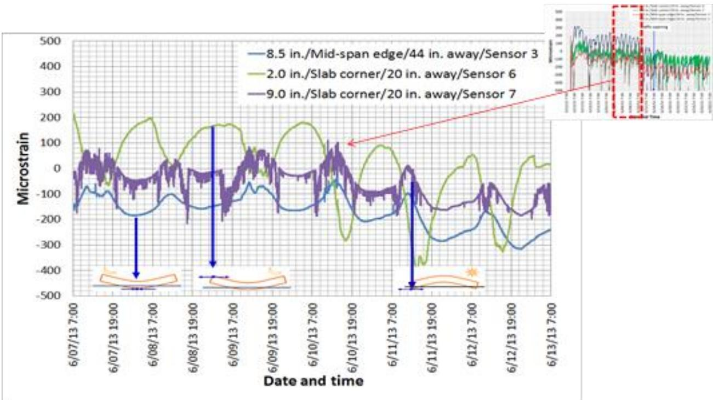
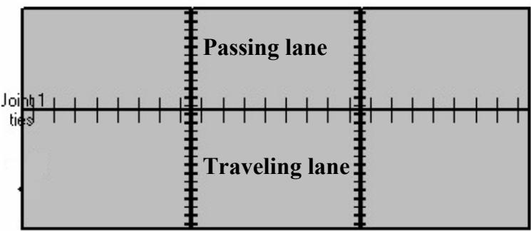
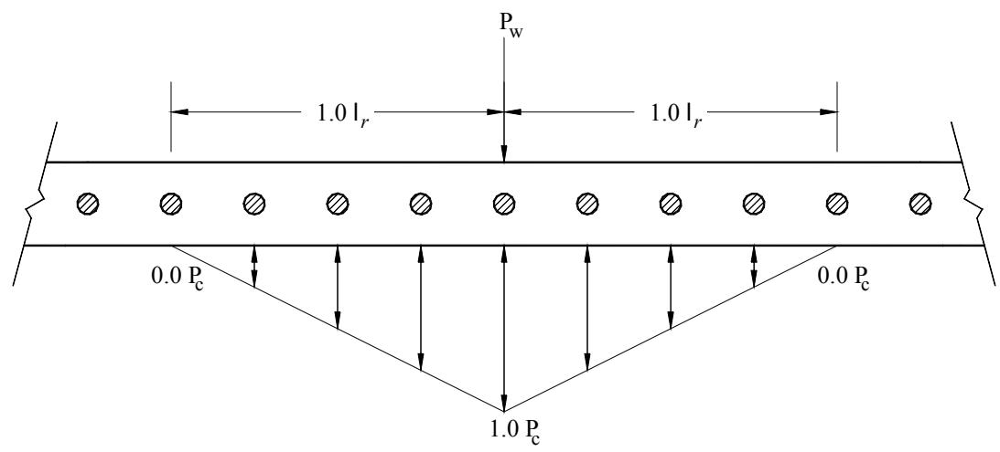
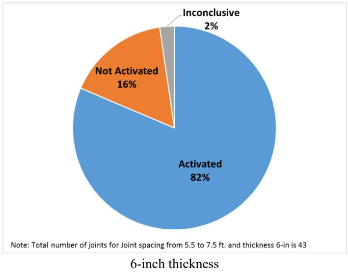

Curling and Warping
Curling and warping are out-of-plane bending deformations in concrete pavement slabs driven by non-uniform temperature or moisture gradients through the slab thickness. These environmental differentials induce internal stresses that cause one part of the slab to expand or contract more than another, resulting in upward or downward curvature primarily at edges and corners [1] [2] [3]. The magnitude of these deformations is fundamentally determined by material properties such as the modulus of elasticity and coefficient of thermal expansion, alongside geometric parameters like slab dimensions [4] [5]. When induced stresses exceed the concrete’s tensile strength or are amplified by traffic loads, these deformations can lead to cracking and significantly impact pavement smoothness and structural integrity [6] [7]. Mitigation strategies often involve managing internal humidity through specialized curing technologies or optimizing joint design to accommodate the resulting movements without compromising load transfer efficiency [8] [9].
CP Tech Center reports covering “Curling and Warping” also include the following subtopics: Curvature IRI, Deflection Ratio, Degree of Curvature, Equivalent Temperature Difference, Pavement Curling, Pavement Warping, Pseudo Strain Gradient (PSG), and Second-Generation Curvature Index (2GCI).
Curling and Warping represent the primary out-of-plane deformations in concrete pavements, driven by internal stresses from moisture and temperature gradients. Pavement Curling manifests as specific bending caused by differential shrinkage between slab surfaces, while Pavement Warping arises from curvature due to thermal differentials across that thickness. These physical mechanisms create distinct geometric distortions that various indices quantify for assessment. The Second-Generation Curvature Index (2GCI) isolates these distortions through second-order polynomial fitting to provide a normalized metric of distress magnitude. Curvature IRI further isolates roughness specifically attributable to this slab behavior, whereas the Degree of Curvature measures the slope change rate to capture differential strains directly. For structural evaluation, Deflection Ratio quantifies how curvature-induced joint misalignment degrades load transfer and response. To simplify input data, Equivalent Temperature Difference aggregates thermal and moisture gradients into a single value representing the net driving effect, while Pseudo Strain Gradient (PSG) calculates the overall curvature needed to transition a slab from flat to its observed shape.
Sources (20)
Sub-concepts (8)
Fundamentals
The deformation of concrete pavements is driven by non-uniform gradients in temperature and moisture through the slab thickness, which induce differential volume changes. These gradients generate internal stresses that cause the rigid slabs to bend out-of-plane, a behavior fundamentally governed by the material’s thermal expansion coefficient and elastic modulus [5]. The magnitude of this response depends on complex interactions between the cement paste and aggregate constituents, which vary with environmental conditions such as moisture content [5]. Long-term durability against these volume changes requires a composite mix design that accounts for permeability and shrinkage mechanisms rather than relying solely on basic strength metrics [10].
The following figure illustrates how the overall thermal expansion of concrete relates to the individual expansions of its constituent materials.
 Relationship between thermal expansion of concrete and thermal expansion of its components (adopted from Ziegeldorf et al. 1978) [5]
Relationship between thermal expansion of concrete and thermal expansion of its components (adopted from Ziegeldorf et al. 1978) [5]
The figure plots the thermal coefficient of expansion on the vertical axis against aggregate content on the horizontal axis.
Key findings
- Environmental bending moments induced by curling and warping significantly exceeded those from dynamic traffic loads, causing high early-age bearing stresses that permanently reduced contact between dowel bars and concrete [9].
- Early-age curling and warring were driven by thermal and moisture gradients developing within the first 72 hours after paving, with spring and fall seasons presenting a significantly higher potential for stress accumulation compared to summer due to larger temperature differentials [3].
- Curling and warping introduced significant scatter in backcalculation of concrete pavement elastic modulus because temperature variations across the slab depth altered deflection profiles during testing, making accurate parameter prediction highly sensitive to the time of day [11].
- Internal curing mitigated curling and warping by reducing the built-in stress associated with moisture gradients and long-term drying shrinkage, primarily through the release of internally stored water from lightweight aggregates or superabsorbent polymers [12].
- Internally cured concrete reduced the coefficient of thermal expansion, modulus of elasticity, and ultimate shrinkage compared to conventionally cured alternatives, allowing for pavement designs with reduced slab thickness or increased joint spacing while maintaining equivalent distress performance [13].
- Concrete overlays exhibited heightened susceptibility to curling and warping compared to full-depth pavements due to their higher surface-area-to-volume ratio, which accelerated water loss during construction and generated elevated thermal stresses [14].
- Curling and warping drove longitudinal cracking in jointed plain concrete pavements by generating high top-to-bottom tensile stress ratios that initiated cracks at transverse joints, particularly when negative temperature gradients were present [7].
- Joint spacing was the predominant factor governing curling-induced joint activation, with longer spacing leading to higher and faster activation rates due to increased shrinkage and curling stresses [4].
Early-Age Curling and Warping Mechanisms
Evidence: 13 reports (11 primary)
Curling and warping are out-of-plane bending deformations in concrete pavement slabs driven by non-uniform temperature or moisture gradients through the slab thickness [15] [1] [16] [6] [17] [2] [14] [7] [4] [3]. Curling is primarily induced by transient thermal differences between the top and bottom surfaces, while warping results from moisture gradients that cause irreversible shrinkage effects [1] [16] [17]. These environmental differentials induce internal tensile stresses as one part of the slab expands or contracts more than another, with upward curvature occurring when the bottom is warmer or wetter than the top and downward curvature when the top is warmer or wetter [15] [16] [2] [4]. During early-age construction, these stresses must remain below the concrete’s developing tensile strength to prevent cracking under restraint conditions from the subgrade and surrounding environment [1] [7] [3].
The figure below illustrates how these deformations are quantified through strain measurements.

Strain measurement: curling and warping [2]The figure displays a time-series plot of microstrain measurements recorded at three different locations on a concrete pavement slab over several days. The data reveals cyclic fluctuations in strain, with the legend identifying sensors positioned at mid-span and slab corners to capture these deformations.
Research problem — Research must address how early-age thermal and moisture gradients interact with concrete material properties to generate internal stresses that compromise structural integrity before the pavement reaches full strength [1] [3]. There is a critical need to quantify how these early-age deformations drive rapid fluctuations in pavement smoothness indices, which can cause acceptance decisions to shift across specification thresholds and impact project economics [15] [17]. Studies aim to resolve the challenge of validating simulation models against field data to accurately predict how environmental loading and design choices influence built-in curling and warping behaviors during the initial curing period [15] [17].
The following figure illustrates the three consecutive slab systems in each lane that were utilized in the finite element simulations.

Three consecutive slab systems in each lane used in FE simulation [17]The figure displays a schematic of a concrete pavement layout divided into two lanes, labeled “Passing lane” and “Traveling lane.” Vertical dashed lines indicate transverse joints separating the slabs, while horizontal tick marks along a central line represent longitudinal reinforcement ties. This configuration represents the geometric model used in finite element simulations to analyze early-age behavior and internal stresses driven by thermal gradients.
State of the art — Current practice for managing early-age curling and warping relies on mechanistic-empirical frameworks that integrate thermal and moisture gradients into equivalent temperature differences to predict permanent slab deformation [17]. Mitigation strategies have shifted toward performance-engineered mixtures with strict limits on shrinkage and paste volume, alongside construction scheduling optimizations such as night paving to minimize thermal gradients [17] [10]. Design guidelines now emphasize optimizing slab geometry through rectangular joints and tied shoulders, while recognizing that built-in curvature from early-age setting is a primary driver of long-term roughness [1] [6] [7].
The following figure illustrates how these predictive models perform in practice by showing the PMED predicted cracking at Site 7.
 Predicted percentage of cracked slabs at Site 7 based on joint spacing, fiber reinforcement, and bond conditions. [6]
Predicted percentage of cracked slabs at Site 7 based on joint spacing, fiber reinforcement, and bond conditions. [6]
The data demonstrates that predicted cracking increases with larger slab dimensions, specifically showing higher values for configurations without fibers or assuming no bond between the concrete and asphalt layers.
Findings from the reports
- Slab curvature exhibits significant diurnal variations driven by temperature gradients, causing ride statistics such as the International Roughness Index to fluctuate in correlation with these early-age thermal and moisture-induced deformations [15] [17].
- Early-age curling and warping are driven by a complex interplay of temperature gradients, moisture variations, drying shrinkage, and creep, rather than thermal effects alone [17] [2].
- Thermal and moisture gradients during the first 72 hours after paving generate stresses that cause pavement curling and warping, which can lead to cracking if they exceed concrete strength [3].
- Temperature differentials induce stresses in composite pavements several times greater than those from vertical loads, creating a high risk of interface debonding that exceeds typical bond strengths [18].
- Curling and warping introduce significant scatter in the backcalculation of concrete pavement elastic modulus because temperature variations across the slab depth alter deflection profiles during testing [11].
- Concrete overlays exhibit heightened susceptibility to curling and warping compared to full-depth pavements due to their high surface-area-to-volume ratio, which accelerates water loss during construction [14].
- Longitudinal cracking in widened concrete slabs is primarily driven by high tensile stresses perpendicular to traffic, which are significantly amplified when mechanical loads combine with negative temperature gradients causing curling [7].
- Permanent effective curling/warping temperature gradients dominate long-term deformation, validating the use of a default effective permanent curling/warping temperature difference in mechanistic-empirical design software [16].
- Built-in curling and warping is a more significant factor in pavement roughness than seasonal or diurnal effects, with high-speed profiler testing showing very little sensitivity to time of day or season [6].
Novelty & rigor — Research has shifted from theoretical stress analysis to capturing the dynamic interplay of early-age thermal and moisture gradients through intensive diurnal monitoring, revealing that transient environmental effects significantly influence pavement smoothness before long-term equilibrium is reached [17]. Novel computational frameworks now process high-frequency field data to isolate geometric deformation from general roughness, establishing linear relationships between measured temperature differences and equivalent temperature metrics that drive permanent slab curvature [16] [17]. Reproducing these mechanistic insights requires rigorous integration of specific material property definitions, such as maturity-based strength development, with finite element simulations calibrated against high-resolution field measurements of slab deflection and curvature [3] [11].
The following figure illustrates the temporal variation in pavement temperature differences at the Burlington site.
 Burlington site—pavement temperature difference between the top and the bottom of slab with time [17]
Burlington site—pavement temperature difference between the top and the bottom of slab with time [17]
The figure displays a time-series plot comparing the temperature differential across concrete slabs for morning versus afternoon paving operations over several days in June.
Reported values
| Parameter | Value | Context | Source |
|---|---|---|---|
| D1 profile change | 24.7 mils | direction of curling changed from upward to downward | [16] |
| effective permanent curling/warping temperature difference | -10°F | default effective permanent curling/warping temperature difference in PMED | [16] |
| L profile change | 39.1 mils | direction of curling changed from upward to downward | [16] |
| slab width | 12 ft | all curling and warping indicators | [16] |
| total equivalent temperature difference | 0°F | threshold where curvature IRI, deflection, and deflection ratio reached zero | [16] |
| IRI | 70.7 in./mi | minimum IRI value at Platteville pilot site (morning conditions) | [17] |
| IRI | 83.0 in./mi | maximum IRI value at Platteville pilot site | [17] |
| p-value | 0.05 | significance level for smoothness indices measurement times (morning vs. afternoon) | [17] |
| slab dimension | 12-ft | large slab size combined with skewed joint pattern causing curling and warping stresses | [14] |
| slab width | 12 ft | regular size slab with full-depth tied PCC shoulder | [7] |
| slab width | 14 ft | widened slab with tied PCC shoulder alternative | [7] |
| interface bond strength | 155 to 302 psi | composite pavement | [18] |
| margin between strength and stress | 6.2 psi | spring conditions | [3] |
Across the reviewed reports, early-age curling and warping are collectively established as deformation mechanisms driven by a complex interplay of transient thermal gradients, irreversible moisture shrinkage, and built-in curvature developed during concrete setting. While thermal differentials induce significant diurnal stress variations that can exceed material strength limits, permanent volumetric distortions from shrinkage and initial curing conditions often dominate the long-term geometric state of the slab. The severity of these early-age deformations is critically modulated by material properties such as the coefficient of thermal expansion and mix design, as well as structural geometry including slab dimensions and joint orientation. [1] [17] [2] [14] [18] [3]
The seasonal variations in these deformations are illustrated in the following figure.
 Seasonal contributions to the degree of curling and warping in restrained and unrestrained slabs. [1]
Seasonal contributions to the degree of curling and warping in restrained and unrestrained slabs. [1]
The figure displays a bar chart comparing microstrain measurements at the midpanel top of concrete slabs across four seasons: Summer, Fall, Winter, and Spring. Data is categorized by slab condition (restrained vs. unrestrained) and strain source (moisture & other vs. temperature), with the chart showing that temperature-induced strain is a dominant factor contributing to total strain. The visual data indicates that higher temperature-induced strain occurs during winter due to slab contraction, while moisture-related strain is notably higher in fall.
Implications — Design and construction practices must prioritize the management of early-age moisture-induced shrinkage over transient thermal gradients, as the former exerts a greater influence on permanent deformation severity [7]. Specifying concrete mixtures with low thermal expansion aggregates and employing internal curing techniques are essential strategies to mitigate built-in stresses during the critical setting period [17] [14]. Construction scheduling should avoid daytime placement that induces significant cooling after hardening, favoring night or cloudy weather operations to minimize early-age curling and warping stresses [1] [17].
Limitations — Current predictive models fail to account for the specific effects of supplementary cementitious materials on concrete performance, leaving a gap in understanding cracking resistance in blended systems [3]. The absence of standardized techniques for describing environmental impacts and the lack of a single factor influencing all deformation indicators compromise prediction accuracy and cross-project comparisons [16] [7]. Existing design tools do not capture the interaction between fiber reinforcement and curling behavior, while field assessments are often confounded by variable weather conditions during construction and post-construction maintenance interventions [6].
Joint Design and Load Transfer Interactions
Evidence: 5 reports (2 primary)
Joint design in rigid pavements relies on load transfer devices to facilitate the movement of traffic loads between adjacent concrete slabs while accommodating independent thermal and moisture-induced movements [9]. These devices function by bearing against the surrounding concrete to resist shear forces and bending moments, thereby minimizing differential settlement and faulting at the joints [9]. By transmitting a portion of the applied wheel load across the joint, these mechanisms significantly reduce stresses and deflections that would otherwise result from joint loading [9].
Research problem — Research must address how early-age curling and warping stresses interact with joint design to prevent premature bearing failure, while developing testing protocols that accurately simulate complex field conditions like seasonal foundation stiffness variations [9]. Studies need to evaluate the trade-offs between reducing joint spacing to control distress and the associated economic costs of increased dowel quantities, particularly regarding the optimization of dowel geometry for load transfer efficiency [19]. Investigations are required to understand how environmental gradients induce curling stresses that magnify tensile forces under traffic loads, and to develop durable monitoring solutions capable of surviving harsh construction and operational environments [2].
State of the art — Dowel bars are recognized as serving a dual function by transferring loads and mitigating slab deformation induced by thermal and moisture gradients, with design considerations increasingly accounting for early-age stresses that often exceed concrete bearing capacity [9]. While traditional steel dowels remain prevalent, alternative materials such as glass fiber-reinforced polymer are being evaluated for their corrosion resistance and ability to reduce bearing stresses through larger diameters and lower stiffness [9].
Findings from the reports
- Demonstrated that dowel bars function as critical mechanisms for reducing slab curling and warping induced by curing and environmental gradients, while also serving to transfer loads across joints [9].
- Revealed that thermal forces often generate higher bending moments in steel dowels than dynamic traffic loads, with early-age curling creating high bearing stresses that can permanently reduce contact between the bar and concrete [9].
- Observed that current mechanistic design procedures frequently ignore environmentally induced responses in dowels despite their critical influence on pavement performance and distress mitigation [9].
- Showed that curling and warping are complex phenomena driven by non-uniform temperature or moisture gradients that induce differential strain responses across the slab depth, generating internal tensile stresses magnified by restraints [2].
- Reported that curling and warping involve variations and non-uniform volume changes at different slab depths and locations, making them more complicated than simple contraction and expansion [2].
- Found that long-term monitoring of these thermal-moisture-induced deformations is severely hindered by low sensor survivability, with only a small fraction of embedded devices remaining functional after extended periods due to alkali-cement reactions and slab movement [2].
Novelty & rigor — Research introduces elliptical steel dowels as a geometric innovation designed to reduce concrete bearing stresses and mitigate end-cracking, offering an alternative to conventional round bars for optimizing joint performance [19]. Novelty in structural health monitoring is defined by the architectural requirements for self-powered wireless MEMS sensor systems that enable real-time remote measurement of strain, temperature, and moisture without relying on traditional wired infrastructure [2]. Reproducing these advancements requires precise experimental protocols, including the use of specific elliptical profiles with controlled spacing and the embedding of robustly packaged sensors at exact depths to ensure long-term survivability in harsh concrete environments [2] [19].
Reported values
| Parameter | Value | Context | Source |
|---|---|---|---|
| sensor survivability | 20% | MEMS sensors after 10 months of operation in PCC slabs | [2] |
| FWD load | 12,800 lbf | dynamic bending stresses in steel and fiberglass dowel bars | [9] |
| temperature gradient | 3°C | environmental bending stresses in PCC slabs | [9] |
| temperature gradient | 5.4°F | environmental bending stresses in PCC slabs | [9] |
Implications — Joint design must account for the dual role of load transfer devices in mitigating environmental stresses, as early-age curling can induce bearing stresses that exceed concrete strength and cause permanent void formation [9]. Design specifications should consider alternative materials with lower stiffness to reduce bending moments induced by traditional steel dowels, requiring adjusted spacing and diameter parameters [9].
The following figure illustrates the load transfer distribution models proposed by Friberg and Tabatabaie et al., which inform these design considerations.

( b ) the figure.5 Load transfer distribution proposed by (a) Friberg and (b) Tabatabaie et al. [9]The figure depicts a concrete slab with dowel bars, illustrating the shear force distribution among these load transfer devices under a central wheel load Pw. A triangular diagram below the slab indicates that the maximum shear force occurs directly beneath the applied load and decreases linearly to zero at a distance of 1.0 lr from the center, where lr represents an effective length.
Limitations — Current design practices frequently neglect environmentally induced stresses, which often exceed those from traffic loads, leading to inadequate consideration of joint distress mechanisms [9]. Simulation tools are constrained by the inability to directly model permanent early-age deformations and moisture effects, requiring approximations that struggle to isolate individual environmental factors [17]. Accurate quantification is hindered by traditional models relying on linear temperature distributions and a lack of reliable long-term sensors for monitoring moisture transport [1] [2].
Mitigation Strategies via Material Properties
Evidence: 4 reports (3 primary)
Mitigation strategies via material properties focus on modifying the concrete mixture to reduce the internal stresses that drive slab deformation. Internal curing techniques utilize saturated lightweight aggregates or superabsorbent polymers to supply water from within the mix, sustaining hydration and maintaining high internal humidity levels during early age hardening [12] [8] [13] [20]. By buffering self-desiccation and minimizing thermal gradients, these material adjustments lower the modulus of elasticity and coefficient of thermal expansion, thereby reducing the magnitude of curling and warping deformations [8] [13].
The following figure illustrates these external and internal curing techniques.
 Comparison of external and internal curing methods in concrete specimens. [20]
Comparison of external and internal curing methods in concrete specimens. [20]
The figure illustrates the difference between external and internal curing by comparing water penetration depths and hydration zones within a concrete matrix.
Research problem — Standard low water-to-cementitious material ratios increase shrinkage and warping risks, creating a need for internal curing methods that maintain early-age moisture to reduce these deformations [13]. While internal curing using lightweight aggregates effectively buffers moisture differentials to mitigate curling and warping, it is necessary to evaluate alternative agents like superabsorbent polymers that offer similar humidity control but introduce distinct trade-offs in strength and porosity [8] [20].
The figure below illustrates how drying shrinkage and autogenous deformation evolve with concrete age for both conventional and high-performance mixes following internal curing.
 Drying shrinkage and autogenous versus concrete age in conventional concrete (left) and high-performance concrete (right) after internal curing [20]
Drying shrinkage and autogenous versus concrete age in conventional concrete (left) and high-performance concrete (right) after internal curing [20]
The figure displays two graphs plotting cumulative shrinkage against concrete age, distinguishing between autogenous shrinkage and drying shrinkage. Drying shrinkage is shown to contribute the most to the total shrinkage of a system compared to autogenous shrinkage. The graphs illustrate how internal curing methods affect these shrinkage components in conventional versus high-performance concrete over time.
State of the art — The field has transitioned from laboratory research to practical implementation of internal curing, primarily using prewetted lightweight fine aggregates or superabsorbent polymers, to mitigate the moisture and thermal gradients that drive slab deformation [12] [8] [13]. While internal curing effectively reduces curling stresses by lowering the modulus of elasticity and coefficient of thermal expansion, widespread adoption is currently limited by logistical challenges in preconditioning lightweight aggregates [8] [13]. Current research increasingly favors superabsorbent polymers as a more logistically efficient alternative that enables dry batching, though their adoption requires balancing improved durability against potential reductions in compressive strength and electrical resistivity [20].
Findings from the reports
- Internal curing mitigated curling and warping by reducing built-in stress associated with moisture gradients and long-term drying shrinkage, which are primary drivers of slab deformation [12] [13].
- Life-cycle cost analysis indicated long-term financial benefits from reduced maintenance frequency despite higher initial construction costs for internal curing [8] [13].
- Internal curing reduced the risk of warping by mitigating moisture gradients and lowering ultimate shrinkage compared to conventionally cured alternatives [13].
- Internally cured concrete lowered the coefficient of thermal expansion, modulus of elasticity, and ultimate shrinkage relative to conventional mixes [13].
- Field monitoring demonstrated that internally cured concrete significantly reduced slab movement caused by curling and warping compared to control concrete due to lightweight fine aggregate buffering moisture gradients [8].
- Internally cured slabs exhibited significantly lower deflection under extreme thermal and moisture gradients than conventional concrete, as indicated by regression models derived from field data [8].
- The mitigation of dimensional instability improved ride quality and decreased the risk of corner breaks in internally cured pavements [8].
Novelty & rigor — The research introduces internally cured concrete as a material-based mitigation strategy that utilizes internal water reservoirs to buffer moisture gradients and reduce the stresses driving slab curling and warping [12] [8] [13]. Distinct from traditional external curing methods, this approach addresses deformation at the mixture design level by lowering the concrete’s modulus of elasticity and coefficient of thermal expansion [12] [13]. Reproducibility is established through specific protocols for substituting fine aggregate with prewetted lightweight materials or superabsorbent polymers, including detailed characterization of absorption kinetics and mixture proportioning constraints [12] [8] [20].
The following figure illustrates how conventional curing compares to this internal curing approach.
 Comparison of external and internal curing mechanisms in concrete specimens. [12]
Comparison of external and internal curing mechanisms in concrete specimens. [12]
The figure illustrates the difference between conventional external curing, where water penetrates from the surface, and internal curing, which utilizes pre-wetted lightweight aggregates to release moisture within the specimen.
Across the reviewed reports, internal curing consistently mitigates curling and warping by buffering moisture gradients through depth, which reduces the built-in stresses associated with drying shrinkage and thermal differentials. The use of lightweight aggregates or superabsorbent polymers lowers the coefficient of thermal expansion and ultimate shrinkage while maintaining high relative humidity, thereby decreasing slab movement under extreme environmental conditions compared to conventionally cured alternatives. These material-level improvements result in significantly lower deflections during field monitoring, which stabilizes dimensional instability and reduces the risk of corner breaks without altering structural performance under low traffic loads. [12] [8] [13]
The following figure illustrates how these material improvements translate into reduced roughness for conventionally cured pavements over their design life.
 IRI of conventionally cured pavements over design life [13]
IRI of conventionally cured pavements over design life [13]
The results indicated that internal curing may allow a decrease in the minimum thickness from 8 and 10 in. to 7 and 9 in., respectively, while the figure illustrates the increase in the IRI value over the design life for conventionally cured concrete.
Implications — Specifying internal curing agents allows designers to mitigate curling and warping by reducing moisture gradients and shrinkage-induced stresses, thereby enabling thinner structural sections or increased joint spacing without compromising performance [12] [13]. Adopting these material properties extends rehabilitation intervals and enhances durability by keeping saw-cuts out of wheelpaths, although practitioners must address logistical challenges regarding the preconditioning and storage of lightweight aggregates to realize long-term financial savings [8].
Limitations — Definitive performance benefits for jointed plain concrete pavement have not yet been established, leaving the field without confirmation of these advantages across all rigid pavement configurations [12]. Lifecycle cost analyses likely underestimate the full economic advantage because they often exclude qualitative durability benefits and assume equal maintenance costs despite evidence suggesting lower rehabilitation expenses for internally cured alternatives [13]. The mechanism behind reduced temperature gradient-driven curling remains unexplained, while logistical challenges in preconditioning lightweight aggregates complicate scalability and structural design models indicate little expected benefit from enhanced load-bearing capacity [8].
Joint Activation Design
Evidence: 1 report (1 primary)
Research problem — How can joint spacing be optimized to balance the trade-off between reduced installation costs from longer slabs and the performance risks of excessive curling stresses, random cracking, and compromised ride quality [4]? What specific geometric thresholds, such as the ratio of slab length to radius of relative stiffness, are required to ensure timely joint activation while maintaining load transfer efficiency in concrete overlays [4]?
The figure below illustrates the relationship between joint activation and slab geometry based on data from the Mitchell County concrete overlay test sections.
 Joint activation vs. L/ℓ and joint spacing for Mitchell County concrete overlay test sections [4]
Joint activation vs. L/ℓ and joint spacing for Mitchell County concrete overlay test sections [4]
The figure plots the percentage of joint activation against slab length, showing a positive correlation where longer slabs exhibit higher activation rates. An orange line representing the ratio of slab length to radius of relative stiffness (L/ℓ) increases alongside the bar chart data, indicating that this geometric parameter serves as an indicator for joint activation behavior.
State of the art — Current design optimization for joint activation prioritizes balancing the trade-off between timely activation and structural integrity by targeting a specific slab length to radius of relative stiffness ratio [4]. While longer joint spacing accelerates activation, it simultaneously increases the risk of random cracking and ride quality issues due to larger joint openings [4].
Findings from the reports
- Identified slab size and the resulting ratio of slab length to radius of relative stiffness (L/ℓ) as predominant factors influencing curling-related joint activation, with higher L/ℓ values correlating to faster and more complete activation [4].
- Demonstrated that longer joint spacing leads to higher and faster activation rates due to increased shrinkage and curling stresses, establishing joint spacing as the primary governing factor for this behavior [4].
- Showed that while thicker slabs exhibited slightly slower initial activation rates due to increased temperature differentials driving curling stresses, they ultimately achieved similar activation levels to thinner sections over time [4].
- Revealed that fiber reinforcement primarily mitigates crack width rather than altering the dynamics of joint activation [4].
Novelty & rigor — The research introduces a design framework that prioritizes the ratio of slab length to radius of relative stiffness as the primary metric for optimizing joint activation, moving beyond fixed spacing intervals [4]. This approach establishes an optimal operational range for this geometric indicator to balance timely joint activation against risks such as excessive opening or random cracking [4]. Reproducibility is achieved through experimental protocols that vary slab geometries and incorporate synthetic macro-fibers, utilizing specific mechanical models to analyze curling stresses under fluctuating environmental conditions [4].
The following figure illustrates how the differential curling stress coefficient varies with the ratio of slab length to radius of relative stiffness.
 Differential curling stress coefficient (C) for different values of the ratio of slab length and radius of relative stiffness (L/ℓ) [4]
Differential curling stress coefficient (C) for different values of the ratio of slab length and radius of relative stiffness (L/ℓ) [4]
The figure plots a curve showing how the stress coefficient C increases as the ratio L/ℓ rises from near zero to approximately eight, after which it plateaus. This relationship demonstrates that for finite slabs, slab proportions significantly influence the stress coefficient within a specific range of L/ℓ values. The graph illustrates how geometric parameters like slab dimensions affect internal stresses that drive curling and warping deformations.
Implications — Joint spacing design must balance the need for timely activation against the risks of increased curling stresses and ride quality degradation by targeting a slab length-to-radius-of-relative-stiffness ratio between four and seven [4]. While fiber reinforcement does not significantly accelerate joint activation, it should be specified to control crack widths and mitigate reflective cracking, thereby enhancing overall joint performance despite its low modulus of elasticity [4].
The figure below illustrates how varying overlay thicknesses influence the percentage of joints activated within this optimal design range.

Pie chart showing the percentage of activated joints for a specific slab thickness and joint spacing range. [4]The figure displays a pie chart illustrating that the majority of joints are in an ‘Activated’ state, while a smaller portion is ‘Not Activated’ and a negligible fraction is ‘Inconclusive’.
Limitations — Optimizing joint spacing to achieve timely activation by increasing the length-to-radius ratio elevates curling stresses and raises the risk of random cracking, which can degrade ride quality through excessive joint openings [4]. Current measurement approaches may yield false negatives in crack detection because thermal expansion causes joints to close during warmer temperatures, rendering some methods insufficiently sensitive under those conditions [4].
Related concepts
In this hierarchy
- Parent: Early-Age Behavior, Curing & Distress
- Child: Curvature IRI
- Child: Deflection Ratio
- Child: Degree of Curvature
- Child: Equivalent Temperature Difference
- Child: Pavement Curling
- Child: Pavement Warping
- Child: Pseudo Strain Gradient (PSG)
- Child: Second-Generation Curvature Index (2GCI)
Related by shared evidence
- Concrete Pavement Joint — shares 16 reports
- CP Tech Center Reports — shares 16 reports
- Early-Age Behavior, Curing & Distress — shares 16 reports
- Dowel Bar — shares 15 reports
- Pavement Curling — shares 14 reports
- Drying Shrinkage — shares 13 reports
- International Roughness Index (IRI) — shares 13 reports
- Pavement Warping — shares 12 reports
Similar topics
- Pavement Curling
- Pavement Warping
- Early-Age Behavior, Curing & Distress
- Concrete Curing
- Concrete Pavement Joint
- Degree of Curvature
- Equivalent Temperature Difference
- Curing Compounds
References
- H. Ceylan, S. Yang, K. Gopalakrishnan, S. Kim, P. Taylor, and A. Alhasan, "Impact of Curling and Warping on Concrete Pavement," Institute for Transportation, Ames, IA, Rep. TR-668, 2016. [Online]. Available: https://www.intrans.iastate.edu/wp-content/uploads/2018/03/curling_and_warping_impact_on_concrete_pvmt_w_cvr.pdf
- H. Ceylan, L. Dong, S. Yang, Y. Jiao, S. Yavas, S. Kim, K. Gopalakrishnan, and P. Taylor, "Development of a Wireless MEMS Multifunction Sensor System and Field Demonstration of Embedded Sensors for Monitoring Concrete Pavements, Volume I," Institute for Transportation, Ames, IA, Rep. TR-637, 2016. [Online]. Available: https://prosper.intrans.iastate.edu/wp-content/uploads/2018/03/wireless_MEMS_volume_I_field_demo_w_cvr.pdf
- K. Wang and Z. Ge, "Evaluating Properties of Blended Cements for Concrete Pavements," Department of Civil, Construction and Environmental Engineering, Iowa State University, Ames, IA, 2003. [Online]. Available: https://www.intrans.iastate.edu/wp-content/uploads/2018/03/blended_cements-1.pdf
- J. Gross, D. King, H. Ceylan, Y. A. Chen, and P. Taylor, "Optimized Joint Spacing for Concrete Overlays with and without Structural Fiber Reinforcement," National Concrete Pavement Technology Center, Ames, IA, Rep. TR-698, 2019. [Online]. Available: https://www.intrans.iastate.edu/wp-content/uploads/2019/06/optimized_joint_spacing_for_overlays_w_cvr.pdf
- K. Wang, J. Hu, and Z. Ge, "Material Thermal Input for Iowa Materials," Center for Transportation Research and Education, Ames, IA, Rep. CTRE 06-272, 2008. [Online]. Available: https://rosap.ntl.bts.gov/view/dot/24333
- D. King, B. Yang, P. Taylor, and H. Ceylan, "Field Performance of Fiber-Reinforced Concrete Overlays," Institute for Transportation, Iowa State University, Ames, IA, Rep. TR-816, 2025. [Online]. Available: https://www.intrans.iastate.edu/wp-content/uploads/2025/05/field_performance_of_frc_overlays_w_cvr.pdf
- H. Ceylan, S. Kim, Y. Zhang, S. Yang, O. Kaya, K. Gopalakrishnan, and P. Taylor, "Prevention of Longitudinal Cracking in Iowa Widened Concrete Pavement," Institute for Transportation, Ames, IA, Rep. TR-700, 2018. [Online]. Available: https://www.intrans.iastate.edu/wp-content/uploads/2018/07/longitudinal_cracking_prevention_in_widened_concrete_pvmt_w_cvr.pdf
- A. Daghighi, P. Taylor, H. Ceylan, and Y. Zhang, "Impacts of Internally Cured Concrete Paving on Contraction Joint Spacing Phase II," National Concrete Pavement Technology Center, Iowa State University, Ames, IA, Rep. TR-746, 2021. [Online]. Available: https://www.cptechcenter.org/wp-content/uploads/2021/05/IC_concrete_paving_impacts_phase_II_field_impl_w_cvr.pdf
- M. L. Porter and R. J. Guinn, Jr., "Synthesis of Dowel Bar Research / Assessment of Dowel Bar Research," Center for Transportation Research and Education (CTRE), Iowa State University, Ames, IA, Rep. HR-1080, 2002. [Online]. Available: https://www.intrans.iastate.edu/wp-content/uploads/2018/03/dowelbarsynthesis.pdf
- J. Gross, J. Weiss, T. Ley, P. Taylor, N. Weitzel, T. Van Dam, G. Smith, and C. Jones, "Performance-Engineered Concrete Paving Mixtures," National Concrete Pavement Technology Center, Iowa State University, Ames, IA, Rep. TPF-5(368), 2022. [Online]. Available: https://www.intrans.iastate.edu/wp-content/uploads/2023/04/performance-engineered_concrete_paving_mixtures_w_cvr.pdf
- H. Ceylan, A. Guclu, M. B. Bayrak, and K. Gopalakrishnan, "Nondestructive Evaluation of Iowa Pavements, Phase 1," CTRE, Iowa State University, Ames, IA, Rep. CTRE 04-177, 2007. [Online]. Available: https://www.intrans.iastate.edu/wp-content/uploads/2018/03/nde-pavements.pdf
- W. J. Weiss and L. Montanari, "Guide Specification for Internally Curing Concrete," National Concrete Pavement Technology Center, Ames, IA, Rep. TPF-5(286), 2017. [Online]. Available: https://www.intrans.iastate.edu/wp-content/uploads/2018/09/IC_guide_spec_w_cvr.pdf
- P. Vosoughi, S. Tritsch, H. Ceylan, and P. Taylor, "Lifecycle Cost Analysis of Internally Cured Jointed Plain Concrete Pavement," National Concrete Pavement Technology Center, Ames, IA, Rep. TR-676, 2017. [Online]. Available: https://publications.iowa.gov/27038/
- J. Gross, D. King, D. Harrington, H. Ceylan, Y. A. Chen, S. Kim, P. Taylor, and O. Kaya, "Concrete Overlay Performance on Iowa's Roadways (Field Data Report)," National Concrete Pavement Technology Center, Ames, IA, Rep. TR-698, 2017. [Online]. Available: https://www.intrans.iastate.edu/wp-content/uploads/2017/09/Iowa_concrete_overlay_performance_w_cvr.pdf
- H. Ceylan, D. J. Turner, R. O. Rasmussen, G. K. Chang, J. Grove, S. Kim, and C. S. Reddy, "Impact of Curling, Warping, and Other Early-Age Behavior on Concrete Pavement Smoothness: EFD Study (Phase I)," Center for Transportation Research and Education, Iowa State University, Ames, IA, Rep. DTFH61-01-X-00042 (Project 16), 2005. [Online]. Available: https://www.intrans.iastate.edu/wp-content/uploads/2018/03/curling_warping-2.pdf
- K. Tian, D. King, B. Yang, S. Kim, A. Alhasan, and H. Ceylan, "Impact of Curling and Warping on Concrete Pavement: Phase II," Program for Sustainable Pavement Engineering and Research (PROSPER), Iowa State University, Ames, IA, Rep. TR-749, 2023. [Online]. Available: https://intrans.iastate.edu/app/uploads/2023/06/Impact_of_Curling_and_Warping_Phase_II_w_cvr.pdf
- H. Ceylan, S. Kim, D. J. Turner, R. O. Rasmussen, G. K. Chang, J. Grove, and K. Gopalakrishnan, "Impact of Curling, Warping, and Other Early-Age Behavior on Concrete Pavement Smoothness: EFD Study (Phase II)," Center for Transportation Research and Education, Ames, IA, 2007. [Online]. Available: https://www.intrans.iastate.edu/wp-content/uploads/2018/03/curling_warping-2.pdf
- J. K. Cable, F. S. Fanous, H. Ceylan, D. Wood, D. Frentress, T. Tabbert, S. Y. Oh, and K. Gopalakrishnan, "Design and Construction Procedures for Concrete Overlay and Widening of Existing Pavements," Center for Portland Cement Concrete Pavement Technology, Iowa State University, Ames, IA, Rep. TR-511, 2005. [Online]. Available: https://www.intrans.iastate.edu/wp-content/uploads/2018/03/oreo_design.pdf
- J. K. Cable, S. L. Totman, and N. Pierson, "Field Evaluation of Elliptical Steel Dowel Performance," Center for Transportation Research and Education, Ames, IA, 2006. [Online]. Available: https://www.intrans.iastate.edu/wp-content/uploads/2018/03/elliptical-steel-dowels.pdf
- B. Zhou, P. Taylor, and K. Wang, "Superabsorbent Polymer in Concrete to Improve Durability," National Concrete Pavement Technology Center, Iowa State University, Ames, IA, Rep. TR-793, 2025. [Online]. Available: https://www.intrans.iastate.edu/wp-content/uploads/2025/04/superabsorbent_polymer_in_concrete_w_cvr.pdf
Feedback on this page